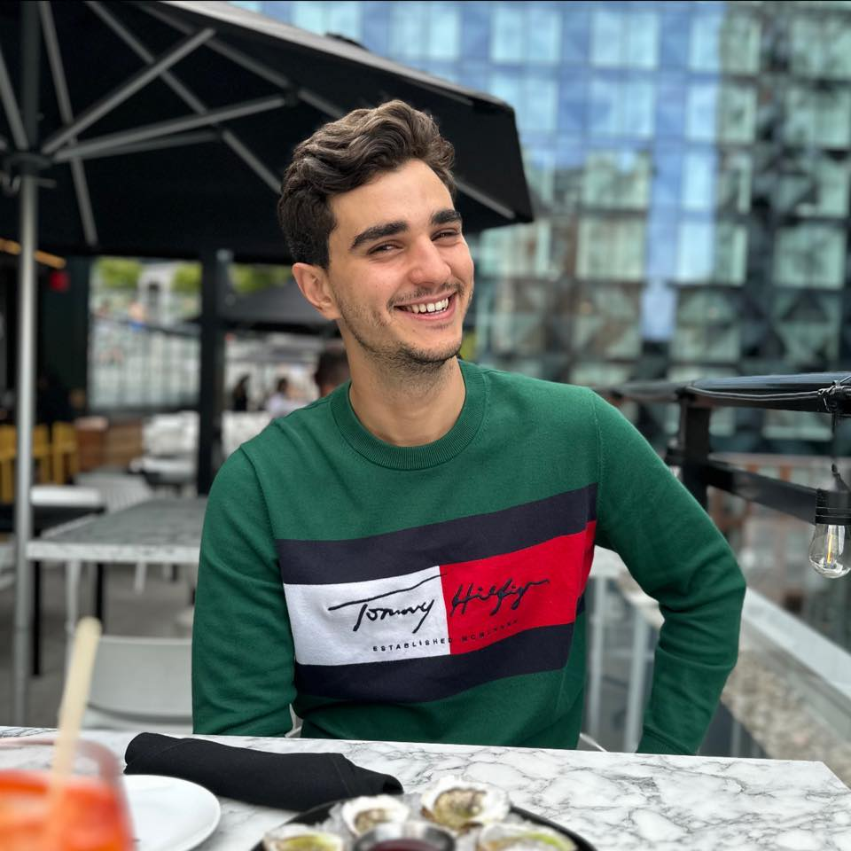

À Propos de Moi
Mon Voyage Créatif
Mon aventure dans le domaine du développement web a commencé il y a quelques années, lorsque j'ai été captivé par les possibilités infinies de création offertes par le code. Depuis, chaque ligne de code que j'écris est une expression de ma passion pour l'art et la technologie. Vous pourrez retrouver l'une de mes principales sources d'inspiration sur le site de Sara Soueidan, une professionnelle talentueuse qui a su marier parfaitement le design et le code.
Mes Intérêts et Qualités
Au-delà du code et du design, j'ai une fascination pour les nouvelles technologies émergentes telles que l'intelligence artificielle et la réalité virtuelle. J'apprécie également la résolution de problèmes complexes, car cela me pousse à repousser mes limites et à trouver des solutions innovantes. Ma curiosité insatiable m'a permis d'apprendre constamment et de rester à jour avec les tendances du secteur.
Ma persévérance et mon souci du détail sont des qualités qui me guident dans la réalisation de projets de haute qualité. Chaque ligne de code, chaque élément de design est minutieusement conçu pour créer une expérience utilisateur exceptionnelle.
Mes Ambitions
Mon objectif ultime est de contribuer de manière significative à l'évolution du web en créant des expériences en ligne qui marient esthétique et fonctionnalité. Je crois en la puissance du design réactif et de l'accessibilité pour toucher un public plus large et offrir des expériences inclusives.
Mes Inspirations et Sites Préférés
Parmi mes sources d'inspiration favorites, le site de Sara Soueidan occupe une place particulière. Son expertise technique combinée à son sens artistique a toujours été une référence pour moi. De plus, le blog de Smashing Magazine et la communauté de CodePen sont des espaces où je puise régulièrement de nouvelles idées et ressources pour mes projets.
Je suis enthousiaste à l'idée de partager mes connaissances, de collaborer avec d'autres esprits créatifs et de continuer à grandir dans ce domaine en constante évolution.
N'hésitez pas à explorer mon site et à me contacter si vous souhaitez discuter de projets passionnants, de collaboration ou simplement pour partager vos idées. Merci de m'avoir rendu visite et j'ai hâte de voir comment notre voyage créatif se déroulera ensemble.